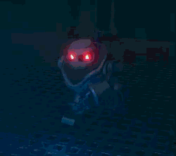

There is 4 components that make up the Enemy System I made: * EnemyBase (Enemy/Agent library) * IEnemyProperties (Stats interface) * EnemyStateMachine (Transitioning) * EnemyStates (Logic/Execution) The enemy is built of an "EnemyBase" script supported by an interface holding its properties. "EnemyBase" owns all the functionality effecting itself and its navigation agent while the state machine handles transitioning logic and executes the active state(s).
State Machine
I built my own statemachine where I decided to make it a bit different from how most normally are done. My machine consists of an active state container, supporting handling multiple states at the same time. This way our enemy can, as an example, be stunned (or overheated as we call it) while getting knocked back at the same time.

Difficulties
Half way through the project I stumbled upon a "better" type of statemachine to use for this project instead of the really basic one I initially set up for the game. Using a *inserttypenameonceyoufinditagain* we could more easily fit in more enemies and with smoother transitioning between each state. The transitioning to this new machine however was exteremely clumpsy and did not find enough time to complete as we got closer to the end of the project.